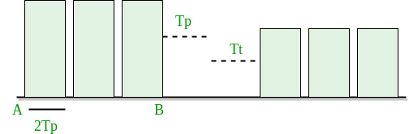

Prerequisite – Introduction to Ethernet, Basics of CSMA/ CD
Carrier sense multiple access with collision detection (CSMA/CD) –
The CSMA method does not tells us what to do in case there is a collision. Carrier sense multiple access with collision detection (CSMA/CD) adds on to the CSMA algorithm to deal with collision. In CSMA/CD, the size of a frame must be large enough so that collision can be detected by sender while sending the frame. So, the frame transmission delay must be at least two times the maximum propagation delay.
Assume some station transmitted data packet and successfully get to destination but it just the Best Case, so we have to take Worst Case scenario in which there will be contention slots. Contention slots are those slot which are not able to transmit their journey due to collision. Suppose A station transmitted data but collide and worst case time wasted is 2Tp and then some station B found out way to transmit the data so it took (As shown in Figure)
Tp ( propagation delay) + Tt(transmission time)
Now we don’t know how many contention slot, so we consider worst case to be of n contention slots.
Efficiency = Tt / ( C*2*Tp + Tt + Tp) Tt → transmission time Tp → propagation time C → number of collision

In CSMA/CD, for success, only 1 station should transmit while others shouldn’t. Let p be the probability to transmit data successfully.
P(success) = nC1 * p * (1-p)n-1 (by using Binomial distribution)
For max P(success), differentiate with respect top p and equate to zero (to get maxima and minima).
We get P(max) = 1/e
Number of times we need to try before getting 1st success
1/P(MAX) = 1/(1/e) = e
Here number of times we need to try (C) = e.
Put a = Tt/Tp and divide by T in Efficiency = Tt / (C* 2 * Tp + Tt + Tp)
We get,
Efficiency = 1/(e*2a + 1 + a) a = Tp/Tt e = 2.72 Now Efficiency = 1/( 1 + 6.44a)
Further Analysis of Efficiency :
Efficiency = 1/ (1 + 6.44a)
= 1/ {1 + 6.44(Tp/Tt)}
= 1/ {1 + 6.44((distance/speed)(Bandwidth/packet length))}
From this derivation, we can conclude many relations :
- If distance increases, efficiency of CSMA decreases.
- CSMA is not suitable for long distance networks like WAN; but works optimally for LAN.
- If length of packet is bigger, the efficiency of CSMA also increases; but maximum limit for length is 1500 Bytes.
- Transmission Time >= 2*Propagation Time
GATE CS Corner Questions
Practicing the following questions will help you test your knowledge. All questions have been asked in GATE in previous years or in GATE Mock Tests. It is highly recommended that you practice them.
- GATE CS 2003, Question 90
- GATE CS 2015 (Set 3), Question 65
- GATE IT 2005, Question 27
- GATE IT 2005, Question 71
- GATE CS 2016 (Set 2), Question 63
- GATE IT 2008, Question 63
Reference –
https://www.youtube.com/watch?v=74zlRH-bj2c